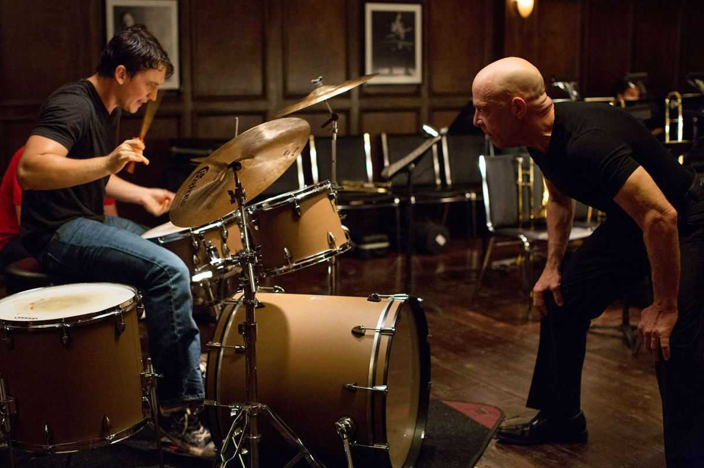
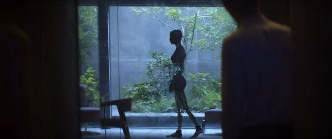
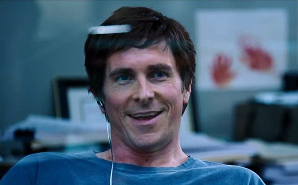
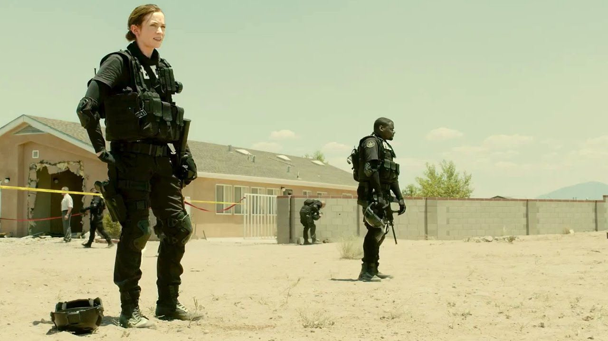
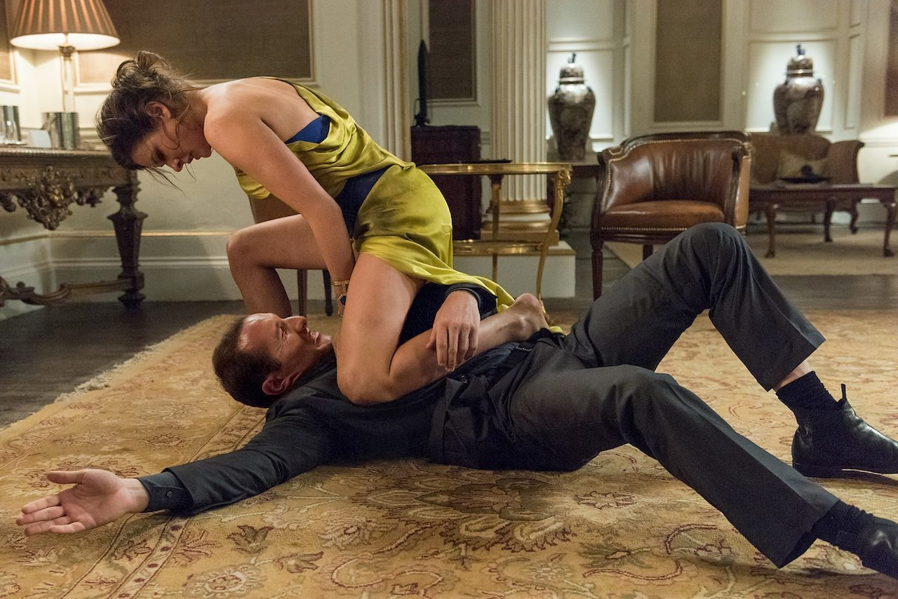
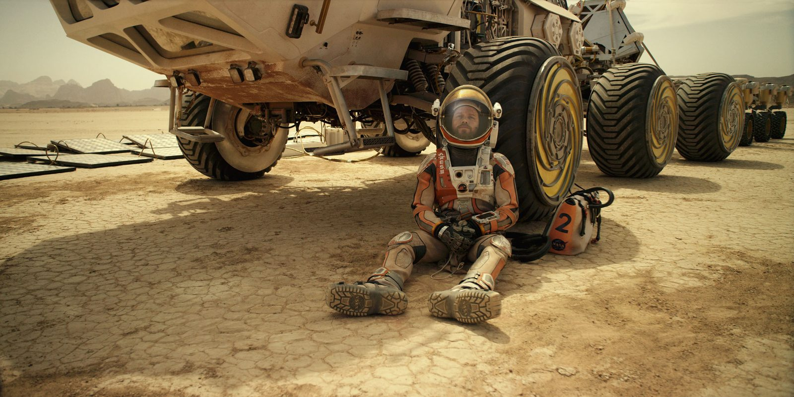
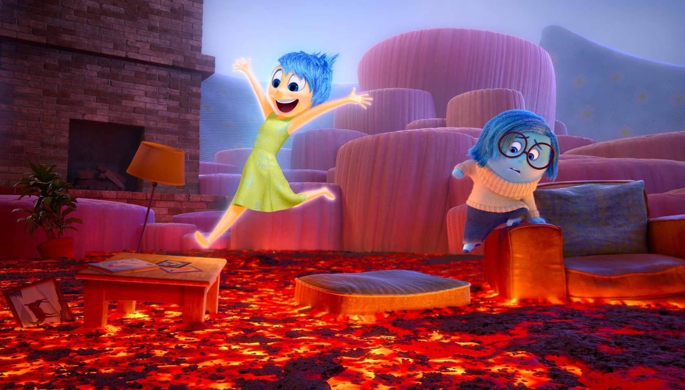
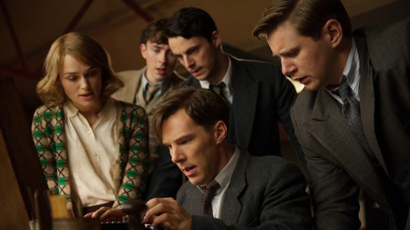

Le top des films 2015 !
This post was originally written in French.
Voilà c’est la fin de l’année, c’est l’heure du top 2015. Une belle année cinéma. Pas d'Interstellar cette fois-ci, mais quelques gros chocs, dont le Mad Max forcément. Et puis ce Most Violent Year, quel film! Pour rappel: Top 2014, Top 2013, Top 2012, Top 2011, Top 2010, Top 2009, Top en 2008, Top en 2007 , Top en 2004-2005-2006
Les "pas encore vus"
Shaun the sheep, Tous les chats sont gris, DopeMe and Earl and the Dying girl, Youth, Crimson Peak, Son of Saul, Mia Madre, Phoenix, The assassin
Séance de rattrapage (pas dans le classement)
Nous trois ou rien, score 7,5/10, bande-annonce, "Je l'aurais vu avant de faire mon top, je l'aurais mis dans mon Top 5 !" Suburra, score 7/10,bande-annonce Black, score 7/10, bande-annonce D'Ardennen, 6,5/10, bande-annonce Belles familles, score 6,5/10, bande-annonce
Le top 2015
 1/ A Most violent year, bande-annonce, score 8/10, « Première vraie claque de 2015. J.C. Chandor, 3 films, 3 très bons films. Le plus impressionnant, c’est la précision de la mise en scène. Chaque scène est parfaite, réfléchie, maîtrisée. Quand je pense qu’il est déjà occupé sur son prochain film, à propos de Deepwater Horizon … "
1/ A Most violent year, bande-annonce, score 8/10, « Première vraie claque de 2015. J.C. Chandor, 3 films, 3 très bons films. Le plus impressionnant, c’est la précision de la mise en scène. Chaque scène est parfaite, réfléchie, maîtrisée. Quand je pense qu’il est déjà occupé sur son prochain film, à propos de Deepwater Horizon … "
 2/ Mad Max: Fury Road, bande-annonce, score 8/10, "La claque de chez claques. Le plaisir de la série B élevé au niveau du chef d'oeuvre :-)"
2/ Mad Max: Fury Road, bande-annonce, score 8/10, "La claque de chez claques. Le plaisir de la série B élevé au niveau du chef d'oeuvre :-)"
  3/ Birdman, bande-annonce, score 7,5/10, "top acteurs, brillant techniquement mais je dois avouer ne pas être complètement rentré dans tous les éléments de l'histoire"
3/ Birdman, bande-annonce, score 7,5/10, "top acteurs, brillant techniquement mais je dois avouer ne pas être complètement rentré dans tous les éléments de l'histoire"



6/ The Big Short, bande-annonce, score 7/10, "Un film au faux air de documentaire", avec un casting qui prend son pied, et surtout qui marie une des plus sombre partie de l'histoire économique avec un humour infaillible. Mention spéciale à Steve Carell et Christian Bale" 7/ Star Wars VII, bande-annonce, score 7/10, "parce que même si intrinsèquement il ne vaut pas une place dans le top 10, le fait d'avoir su relever le défi et relancer la série avec un bon film, c'est juste merveilleux." 8/ Victoria, bande-annonce, score 7/10, "Avec Ex-Machina, et dans un tout autre genre, le deuxième surprise de 2015. A voir absolument."
9/ Sicario, bande-annonce, score 7/10, "Quand je pense que le film était à Cannes, avec des critiques du genre "Maîtrisé par peu intéressant". Sicario, c'est le cinéma que j'adore. Ultra rendu, superbement interpreté, avec un vrai sujet. Putain de critiques cannoises. "the-theory-of-everything-image-eddie-redmayne

10/ The Theory of Everything, bande-annonce, score 7/10, "Difficile de passer outre la brillante interprétation d'Eddie Redmayne, déjà assez magnétique dans ses autres rôles d'ailleurs."
 11/ Turist, bande-annonce, score 7/10, "La première surprise de 2015. Même si le film avait buzzé au point d'être pressenti pour les Oscars du Meilleur film étranger. C'est un ovni."
12/ CitizenFour, score 7/10, "Assez incroyable de voir un documentaire qui permet de vivre des événements en temps réel. Passionnant."
11/ Turist, bande-annonce, score 7/10, "La première surprise de 2015. Même si le film avait buzzé au point d'être pressenti pour les Oscars du Meilleur film étranger. C'est un ovni."
12/ CitizenFour, score 7/10, "Assez incroyable de voir un documentaire qui permet de vivre des événements en temps réel. Passionnant."
 13/ Foxcatcher, bande-annonce, score 7/10, « grandes prestations, étonnante histoire »
14/ Man Up, bande-annonce, score 7/10, "Lake Bell et Simon Pegg, voilà un couple étonnant pour une comédie romantique anglaise et bavarde comme je le adore. A voir!"
13/ Foxcatcher, bande-annonce, score 7/10, « grandes prestations, étonnante histoire »
14/ Man Up, bande-annonce, score 7/10, "Lake Bell et Simon Pegg, voilà un couple étonnant pour une comédie romantique anglaise et bavarde comme je le adore. A voir!"



16/ The Martian, bande-annonce, score 7/10

17/ Inside Out, bande-annonce, score 7/10 18/ Big Hero, bande-annonce, score 7/10, « Même si Big Hero n’est pas une chef d’oeuvre, cela reste un super chouette dessin (très bien) animé, plein de punch, fun, avec un Big Hero qu’on voudrait avoir chez soi, mais d’autres personnages un peu moins réussi."
18/ Big Hero, bande-annonce, score 7/10, « Même si Big Hero n’est pas une chef d’oeuvre, cela reste un super chouette dessin (très bien) animé, plein de punch, fun, avec un Big Hero qu’on voudrait avoir chez soi, mais d’autres personnages un peu moins réussi."
 19/ Kingsman, bande-annonce, score 7/10, "Plus réussi que The man from U.N.C.L.E., car plus original. Kingsman est une belle réussite. C'est drôle, c'est dynamique, le personnage sont originaux et la mise en scène claque".
19/ Kingsman, bande-annonce, score 7/10, "Plus réussi que The man from U.N.C.L.E., car plus original. Kingsman est une belle réussite. C'est drôle, c'est dynamique, le personnage sont originaux et la mise en scène claque".
 20/ The riot club, bande-annonce, score 7/10
20/ The riot club, bande-annonce, score 7/10


21/ The Imitation Game, bande-annonce, score 7/10, "L'histoire du gars qui invente l'ordinateur et sauve 14 millions de vie, tout cela avant ses 40 ans ... Ça va quoi :-)"Mentions honorables
Bridge of spies, bande-annonce, score 7/10 L'affaire SK1, bande-annonce, score 7/10 While we were young, bande-annonce, score 7/10 The overnight, bande-annonce, score 7/10, "Complètement loufoque et drôle, une belle petite surprise. Rien que pour Jason Schartzman déjà ... " En équilibre, bande-annonce, score 7/10 The program, bande-annonce, score 7/10 Straight Outta Compton, bande-annonce, score 6,5/10 The man from U.N.C.L.E., bande-annonce, score 6,5/10 The Walk, bande-annonce, score 6,5/10 Fast & Furious 7, bande-annonce, score 6,5/10 X/Y, bande-annonce, score 6,5/10 Trainwreck, bande-annonce, score 6,5/10 L'enquête, bande-annonce, score 6,5/10 American Sniper, bande-annonce, score 6,5/10, « il y avait de quoi faire un film stressant ou un film psychologique. Au final ce n’est aucun des deux. Dommage. Aura-t-on encore un jour un Mystic River de la part d’Eastwood? » What we do in shadows,, bande-annonce, score 6,5/10 Big eyes, bande-annonce, score 6,5/10 Selma, bande-annonce, score 6,5/10 Son of a gun, bande-annonce, score 6/10 Wild, bande-annonce, score 6,5/10 Still Alice, bande-annonce, score 6,5/10 Relatos Salvajes, bande-annonce, score 6,5/10 Dheepan, bande-annonce, score 6,5/10 La loi du marché, bande-annonce, score 6,5/10 Everest, bande-annonce, score 6,5/10,"Quand on a de grosses attentes, on finit souvent par être un peu déçu. Malgré l'énorme casting, le film semble un peu manquer d'ambitions." The gift, bande-annonce, score 6,5/10, "Une belle petite surprise." Un français, bande-annonce, score 6,5/10 Southpaw, bande,annonce, score 6/10, "Trop cliché pour être un réel bon film, 6/10 pour la performance de Jake ..."
Comments 4
Le top des films 2016 | The R Blog, 2017-01-16 10:00
[…] rappel: Top 2015, Top 2014, Top 2013, Top 2012, Top 2011, Top 2010, Top 2009, Top en 2008, Top en […]
namejastin, 2018-05-24 22:42
Première vraie claque de 2015
Le top des films 2018 | The R Blog, 2019-01-17 17:59
[…] rappel: Top 2017, Top 2016, Top 2015, Top 2014, Top 2013, Top 2012, Top 2011, Top 2010, Top 2009, Top en 2008, Top en […]
Le top des films 2017 | The R Blog, 2017-12-27 11:39
[…] rappel: Top 2016, Top 2015, Top 2014, Top 2013, Top 2012, Top 2011, Top 2010, Top 2009, Top en 2008, Top en […]